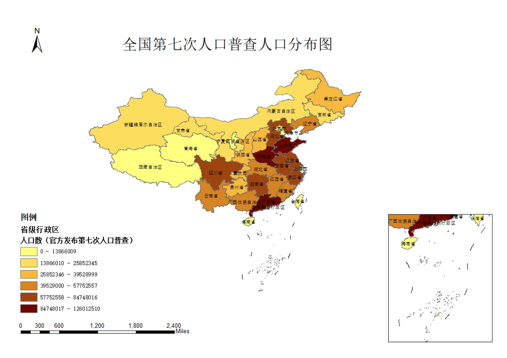
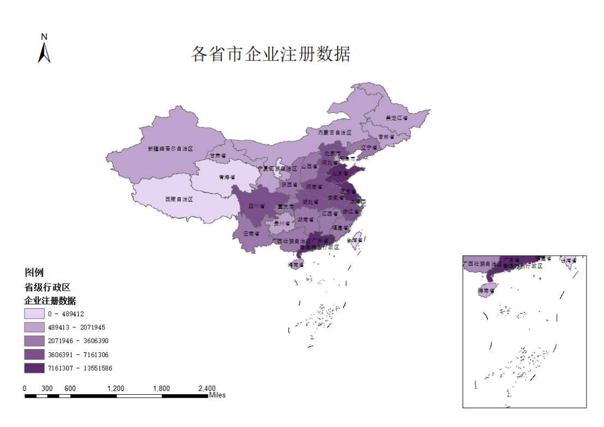
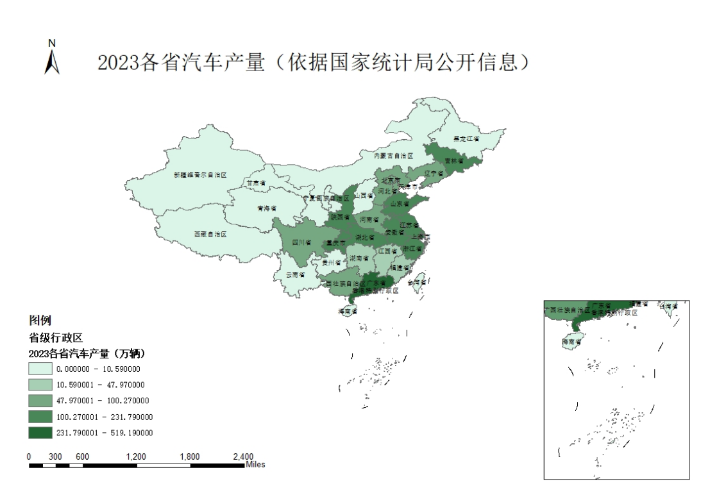
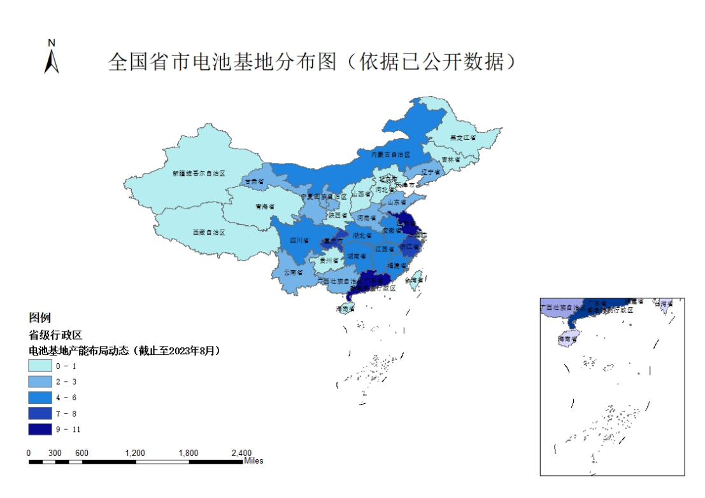

我们的案例展示
我们的案例展示


基于提供的数据对中国各省供应链状况的分析

人口数量与供应链活动
广东、山东、河南、四川等省份人口数量众多，这些地区往往市场需求大，消费能力强，为供应链提供了庞大的市场基础。
西藏、青海、宁夏等省份人口较少，虽然供应链活动可能相对较少，但这些地区可能具有特殊的地理或资源优势，适合发展特定产业。

企业注册数据与产业活跃度
江苏、浙江、广东等省份企业注册数量众多，表明这些地区的产业活跃度较高，供应链活动频繁。
西藏、青海、宁夏等省份企业注册数量较少，可能表示这些地区的产业发展相对滞后，需要加大投资和政策扶持。

汽车产量与制造业实力
高产量省份：广东、上海、吉林等省份汽车产量较高，表明这些地区的汽车制造业实力较强，对供应链有较高的依赖和需求。
低产量省份：山西、内蒙古、新疆等省份汽车产量较低，可能表示这些地区的汽车制造业发展相对较弱，但也可能具有发展潜力。

电池基地产能布局与供应链协同
安徽、河北、内蒙古、浙江、福建、江西、山东、河南、湖北、湖南、广西、重庆、四川等省份有电池基地布局，这些地区在新能源汽车产业链中占据重要地位，有利于提升供应链协同效率。
场景供应链
场景供应链
尊敬的客户，
面对目前的红海事件，我们预计会看到以下几方面对您的供应链的影响：
1.供应链中断：关键原材料和零部件可能面临供应中断的风险。特别是，如果事件影响了电子产品供应链的重要环节，如芯片制造或稀土元素供应，这种影响可能尤为显著。
2.运输和物流延迟：全球或区域性的运输可能遭受严重干扰。这意味着产品可能无法按时交付，对生产周期和市场交付时间产生影响。
3.成本上升：由于原材料短缺和运输问题，生产成本可能会显著上升。这可能导致产品的整体成本增加。
4.生产延迟或停滞：如果事件影响到了主要的生产设施，可能会导致生产进程延迟或暂时停滞。
5.市场需求的变化：此类事件可能改变消费者的购买行为，从而影响市场需求。需求的不确定性可能需要您调整市场策略和库存管理。
鉴于这些潜在风险，我们建议您采取积极措施，比如加强供应链的弹性、调整库存管理策略、灵活调整生产计划、管理财务风险，并与我们保持紧密沟通，共同应对这些挑战。
我们理解这些挑战可能给您的业务带来不便，但请放心，我们将全力以赴支持您，共同应对这些不确定性和挑战。
尊敬的客户：
近期，台风已经对电子产品行业的供应链构成了显著的风险。作为您的合作伙伴，我们认为有必要向您提供关于台风可能对供应链带来的影响以及建议的应对措施的信息。
生产设施损坏：台风可能直接损坏位于沿海地区的生产工厂，导致生产中断或停止。
物流中断：强风和暴雨可能导致航运和陆运延误，特别是在港口和机场，影响原材料的及时供应和成品的及时发货。
供应商中断：若台风影响关键供应商所在地区，可能导致供应链中断，影响整体生产和配送计划。
通讯中断：台风可能导致通讯基础设施受损，影响供应链各环节的信息流通。
需求变化：极端天气可能影响消费市场，导致产品需求的不确定性。
应对措施建议：
多元化供应商：减少对特定地区供应商的依赖，以分散风险。
增强仓储能力：确保关键物料和产品有足够的库存，以防短期供应中断。
灵活的物流安排：建立灵活的物流计划，以应对可能的运输延迟。
建立应急通讯系统：确保在通讯基础设施受损时，仍能保持有效的内部和外部沟通。
市场监测：密切关注市场动态，以便及时调整生产和销售策略。
我们强烈建议您考虑上述风险，并采取适当的预防措施以保护您的业务免受台风等极端天气事件的影响。合理的预备和灵活的策略将是确保供应链稳定运作的关键。
尊敬的客户：
在近期的地震事件后，我们深切认识到地震对电子产品行业供应链可能造成的严重影响。为了帮助您更好地理解和应对这些风险，我们列举了一些主要的影响点，并提出了相应的建议措施。
生产设施破坏：地震可能导致生产线受损，影响正常的生产进度。
物流和运输中断：地震可能导致道路、桥梁损坏，影响物料运输，导致原材料和成品运输延迟。
供应商中断：地震影响的区域如果包括关键供应商，可能会导致供应链的部分或全部中断。
通讯中断：地震可能导致通信基础设施受损，影响信息流动和协调工作。
员工安全和生产力影响：地震可能导致员工无法正常上班，影响生产力。
应对措施建议：
增强生产设施的抗震能力：确保关键生产设施具备足够的耐震性能。
建立备用供应商网络：减少对单一供应商的依赖，确保在紧急情况下有替代的供应途径。
确保充足的库存：为关键原材料和产品保持适当的库存量，以减少中断的影响。
建立紧急沟通计划：确保在紧急情况下能够快速有效地进行内部和外部沟通。
员工安全和应急培训：提供员工安全培训和应急响应培训，确保员工在地震发生时能够安全行动。
我们建议您考虑这些可能的风险，并采取适当的预防措施以保障您的业务连续性和供应链稳定。面对自然灾害，及时的准备和快速的响应是至关重要的。
尊敬的客户：
鉴于最近洪水事件，我们意识到这种极端天气事件对电子产品供应链可能带来的显著风险。洪水不仅直接影响生产设施，还可能对整个供应链造成广泛影响，包括但不限于以下几个方面：
生产中断：洪水可能导致生产工厂暂停运作，影响产品的生产进度和交付时间。
物流延迟：洪水导致的基础设施损害（如道路、桥梁和铁路）可能严重阻碍物料和成品的运输。
供应商受阻：洪水可能影响关键供应商的运营，导致原材料短缺。
电力和通讯中断：洪水可能导致电力供应和通讯服务中断，进一步影响生产和协调。
库存损失：洪水可能导致存储在仓库中的原材料和成品受损。
应对措施建议：
提高设施的防洪标准：确保关键生产设施和仓库位于相对安全的地区，并采取必要的防洪措施。
建立多元化的物流计划：制定灵活的物流方案，以应对基础设施受损时的运输需求。
发展多元化供应商网络：通过建立多个供应源减少对单一供应商的依赖，提高供应链的韧性。
增强信息技术系统的抗灾能力：确保关键数据和系统能够在灾害发生时迅速恢复，保持通讯畅通。
制定应急预案：为员工和关键运营流程制定详细的应急响应计划，确保快速有效的灾后恢复。
我们强烈建议您考虑这些潜在风险，并采取相应的预防措施以保障您的业务连续性。对于我们而言，确保供应链的稳定和安全是最重要的任务。
请务必认真考虑这些信息，并采取必要的预防和应对措施。我们期待与您合作，共同应对这些挑战。
尊敬的客户：
由于全球经济形势的变化，货币波动已成为影响电子产品行业供应链的重要因素。我们认为有必要向您通报这一现象可能对您的业务造成的风险及其潜在影响。货币波动可能导致以下几个方面的影响：
成本变化：货币价值的波动可能会导致进口原材料的成本上升或下降，影响生产成本。
价格不稳定性：货币价值变化可能导致您的产品在不同市场上的定价不稳定，影响销售和利润。
供应链成本管理：货币波动可能影响供应链中的每个环节，从采购到生产、从物流到销售。
国际贸易障碍：强势货币可能导致出口产品在国际市场上变得不具竞争力，而弱势货币可能影响进口原料的成本。
应对措施建议：
灵活定价策略：考虑实施动态定价策略，以应对货币波动带来的成本变化。
风险管理：采用适当的金融工具和策略，如期货合约和外汇套期保值，以减少货币波动的风险。
成本效益分析：定期评估供应链的成本效益，以适应不断变化的货币价值。
市场多样化：通过进入不同货币区的市场来分散货币风险。
紧密监控货币市场：持续关注货币市场的动态，以便及时调整策略。
我们建议您密切关注货币波动的动态，并采取适当的预防和应对措施来降低其对您业务的影响。我们承诺将与您紧密合作，共同应对这些挑战。
请您重视这些信息，并根据实际情况调整您的策略和操作。我们期待继续与您紧密合作，共同克服挑战。
尊敬的客户：
近期市场动荡可能对电子产品供应链带来显著影响。我们认为有必要向您通报可能面临的风险及其对业务的潜在影响。市场动荡包括但不限于货币波动、贸易政策变化、地缘政治紧张等，它们可能对供应链产生以下影响：
成本波动：原材料和生产成本可能因货币波动和贸易关税而显著变化。
供应不确定性：地缘政治紧张和贸易限制可能导致供应链中断或原材料短缺。
需求波动：经济不确定性可能影响消费者购买力，进而影响产品需求。
物流和运输挑战：贸易壁垒和运输限制可能导致物流成本上升和运输延迟。
市场准入限制：某些市场可能由于政治或经济因素对外国产品设限。
应对措施建议：
灵活的成本管理：密切监控成本变化，采用灵活的定价策略以应对市场波动。
多元化供应链：建立多元化的供应商网络，减少对单一市场或供应商的依赖。
加强需求预测：利用先进的数据分析工具，准确预测市场需求，以便更好地管理库存。
优化物流计划：探索多种物流和运输选项，以应对潜在的贸易壁垒和运输挑战。
策略性市场定位：评估并适应不同市场的政策和需求，以保持市场准入和竞争力。
我们建议您考虑这些潜在风险，并采取适当的预防和应对措施来保障您的业务连续性。作为您的合作伙伴，我们承诺在这些充满挑战的时刻与您同行。
请您重视这些信息，并根据实际情况调整您的策略和操作。期待继续与您紧密合作，共同应对这些挑战。